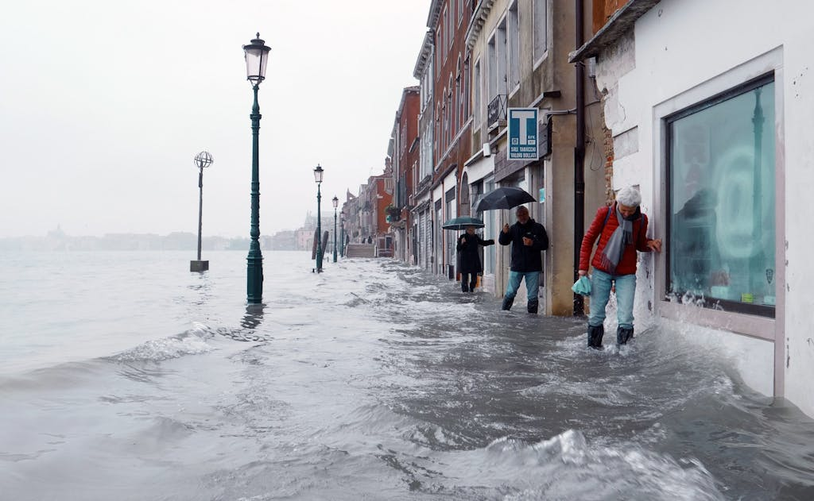
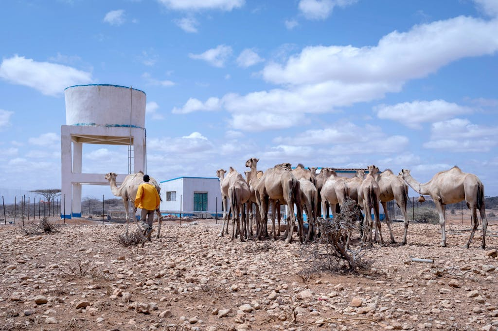
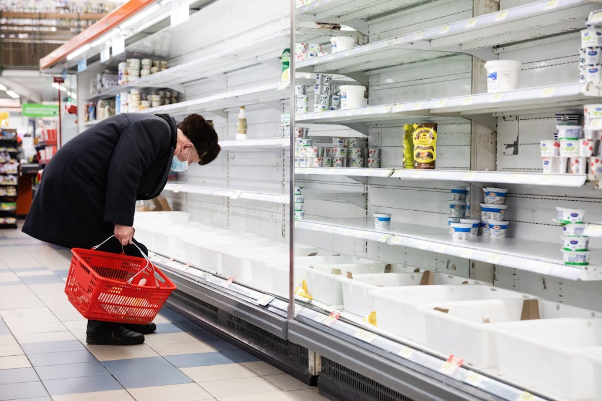
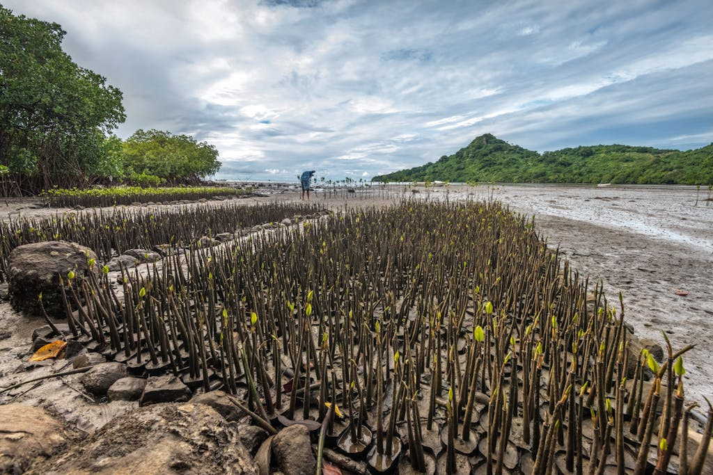
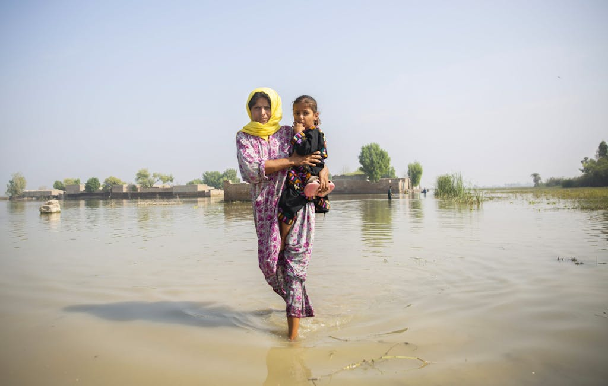
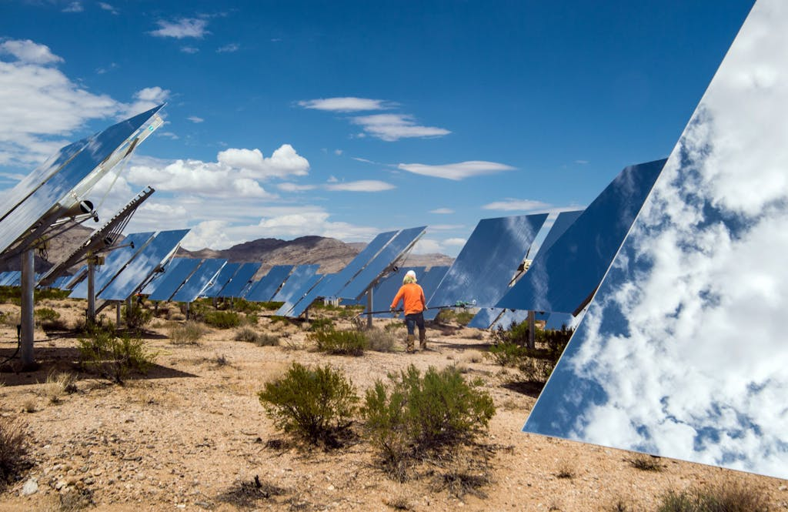

Four years of consecutive droughts have left families in southern Madagascar helpless and unable to feed themselves. Access to water remains difficult for the region of Androy. Photo: Safidy Andrianantenaina
CLIMATE ISSUES TO WATCH IN 2023: TOWARD COP 28 AND FASTER, MORE URGENT CLIMATE ACTION
BY UN FOUNDATION CLIMATE AND ENVIRONMENT EXPERTS ON DECEMBER 12, 2022
When it comes to climate change, 2022 was a split screen: As the world took several important steps to curb the climate crisis, its impacts continued to worsen. Our climate and environment experts take stock of the progress that’s been made and look ahead to the work that remains to be done.
2022 delivered important progress in the climate change fight. The United States enacted its first-ever climate legislation. The Inflation Reduction Act will inject an unprecedented $369 billion of public spending and tax credits into the U.S. economy to boost clean energy, clean infrastructure, and climate resilience over the next decade.
Australia elected a pro-climate-action government that quickly raised the country’s climate targets and enacted legislation to match. In Brazil, President Luiz Inácio Lula da Silva won on a platform that included halting and reversing Amazonian deforestation. And at COP 27 in Egypt, countries agreed to develop new funding arrangements that can mobilize resources to help developing economies suffering directly — and disproportionately — from the impacts of climate change.
At the same time, however, the climate crisis has grown even more acute as emissions continue to rise at an alarming rate. There were daily reminders this year of the increasingly severe and irreversible consequences that will ensue if we allow the world to break the 1.5°C warming threshold over preindustrial times — from catastrophic flooding in Pakistan and China, to record-breaking heat waves in the U.S. and Europe, to severe drought in Africa and record ice melt at the poles.
It is clearer than ever that climate change is interwoven with other great crises the world is facing by fueling them and playing a critical role in how we work to resolve them. Take Russia’s invasion of Ukraine, which is causing Europe to pay the economic and security consequences of its own fossil fuel dependence and is forcing near-term decisions that will have long-term impacts. Those decisions will determine whether the continent’s transition away from fossil fuels accelerates or slows by locking in more dirty infrastructure in its pursuit of quick relief from soaring energy prices. This has, in turn, triggered a global food security crisis. The combination of rising energy prices, climate-fueled droughts, and the curtailment of Ukrainian agricultural exports pushed a perilously stretched global food system to the brink.
Here’s a closer look at the state of play as we exit 2022, and what it means for climate action in 2023.

Built atop small lagoon islets, Venice, Italy, has been a victim of both subsidence and, more significantly, global sea level rise fueled by climate change. The Italian government has funded construction a series of floodgates to close the lagoon entrance before exceptionally high tide phenomena known as acqua alta. Photo: Adam Sébire
1. CLIMATE DIPLOMACY AND THE PATH TO COP 28
Despite a lack of major negotiating deadlines, an important breakthrough for climate justice and climate diplomacy occurred at COP 27. Countries successfully negotiated a long-sought agreement to establish a suite of funding arrangements, including a new “loss and damage” facility to help compensate developing economies suffering from the devastating effects of climate change. The UN Secretary-General’s launch of the Early Warnings for All initiative also put vulnerable countries in focus at COP 27. The initiative aims to ensure that every person on Earth is protected by disaster forecasting, preparedness, and response in the next five years. In fact, the urgent need for early warning systems was so widely appreciated at COP 27 that, for the first time, they figured prominently in the cover decision, known as the Sharm el-Sheikh Implementation Plan. The Secretary-General also zeroed in on non-state actors and seized the moment to launch the recommendations developed by his High-level Expert Group on the Net-Zero Commitments of Non-State Entities(HLEG). The independent group was created to address the “deficit of credibility and a surplus of confusion over emissions reductions and net zero targets by establishing the standards and measure that must be adhered to ensure action and combat greenwashing.”
WHAT TO WATCH FOR IN 2023
'Nothing that happened at COP 27 will diffuse the mounting pressure on countries to demonstrate at COP 28 in Dubai that they will take immediate and decisive action to keep the goals of the Paris Agreement within reach.'
Pete Ogden, Vice President for Climate and Environment, & Ryan Hobert, Managing Director for Climate and Environment, UN Foundation
One space to watch closely will be the Global Stocktake, which is mandated under the Paris Agreement to take place every five years to evaluate implementation progress against the goals of the agreement. The first Global Stocktake began in 2022 at a technical level and will culminate at COP 28, but a great deal of uncertainty remains about what this undertaking will deliver. A Stocktake that simply tells us what we already know — that we are off track — would be seriously deficient. Countries have also set important deadlines to establish a new global goal on adaptation by COP 28, as well as to make progress and deliver on a number of existing climate finance commitments. These range from working out how to establish a “loss and damage” facility to meeting other existing finance commitments that developed economies have failed to thus far deliver, including the $100 billion in financing to developing economies that was pledged starting in 2020.

Devastating drought has affected human lives and livestock in the Horn of Africa, leaving nearly 20 million people in need of humanitarian assistance. Photo: Mulugeta Ayene /UNICEF
2. CLIMATE FINANCE
After decades of advocating for dedicated funding to help vulnerable countries cope with the impacts of a climate crisis many of them did little to cause, developing economies and partners made a unified push for progress on this issue in 2022 — and they finally succeeded. These recourses, some of which will be delivered through a new loss and damage facility agreed at COP 27, will help them to cope with the droughts, floods, storms, and other climate-induced catastrophes, whether their onset was fast or slow. In the wake of this landmark agreement, the focus now shifts to figuring out how to make this fund operational and able to receive substantial contributions to fulfill its enormous task.
WHAT TO WATCH FOR IN 2023
'At COP 27, countries gave themselves a year to establish this new loss and damage facility and to organize other avenues and channels of funding accordingly.'
David Levaï
Fellow for International Climate Policy and Diplomacy, UN Foundation
Alongside loss and damage, other important climate finance issues will need to be addressed in 2023. This includes if and how developed economies can at last reach the threshold of mobilizing $100 billion of public and private climate finance for developing economies — a threshold that they had pledged to reach annually beginning in 2020 but have yet to fulfill. Over the past two years, developed economies have also started to co-design climate finance packages with major emerging economies to accelerate their transition away from fossil fuels in a just and sustainable manner, and there is potential for another such finance package for India to be arranged in 2023.
But more structural change may also be in the making, as developed economies are under growing pressure to reform and capitalize international financial institutions, such as the World Bank, so they can invest more in climate efforts, attract private capital, and help vulnerable countries escape a cycle of catastrophes and debt. We will be closely following how this unfolds in 2023, including at a finance summit in Paris in June 2023 and the World Bank and International Monetary Fund Annual Meetings that will take place in Morocco next fall.

The war in Ukraine has led to startling food shortages—meaning there are frequently empty shelves in grocery stores in Kiev. Photo: Drop of Light/Ukraine
3. FOOD SYSTEMS AND CLIMATE CHANGE
2022 was arguably food and agriculture’s breakout year on the climate scene. Russia’s invasion of Ukraine launched food security to the top of the geopolitical agenda. Already, food and agriculture were gaining prominence on the international climate agenda, building on momentum and awareness created by the UN Secretary-General’s Food Systems Summit in 2021.
With food systems generating up to a third of all greenhouse gas emissions, food and agriculture’s new position as a primary climate concern was evident everywhere at COP 27. Not only did agriculture make it onto the list of thematic days for the first time, but the number of COP pavilions with all-day programming on food and agriculture issues jumped from zero to five. Several major international food and agriculture initiatives, such as the Agriculture Innovation Mission for Climate (AIM for Climate), the Egyptian presidency’s Food and Agriculture for Sustainable Transformation Initiative (FAST) initiative, and the US-led Global Fertilizer Challenge, were established or strengthened at COP 27. And agriculture was one of the headline issues called out in the Sharm el-Sheikh Implementation Plan, with the establishment of a four-year joint work planto ensure that food and agriculture remain on the international climate agenda in the coming years.
WHAT TO WATCH FOR IN 2023
'There will be many opportunities to make further progress on food, agriculture, and climate in the year ahead — thanks to the newfound prominence on the global climate agenda.'
Lasse Bruun, Climate and Food Director; Ryan Hobert, Managing Director for Climate and Environment; and Evelin Tóth, Senior Analyst for Climate Policy and Research, UN Foundation
In 2023 countries and other partners will consolidate and expand recent gains in agricultural innovation to address climate resilience and mitigation, including for smallholder farmers and in the realm of agroecology. For the first time, the UN Food and Agriculture Organization announced that it will develop a plan by COP 28 to reduce emissions from food and agriculture systems in line with the goal of keeping temperatures from rising above 1.5°C. The AIM for Climate initiative, led by the United States and the United Arab Emirates, and of which the UN Foundation is a partner, will hold a major summit in Washington, D.C., in May, and the initiative’s work is expected to be prominently featured at COP 28 given that the UAE is the host.

Hundreds of mangrove seedlings are growing in a small bay of an island south of Fiji's main island Viti Levu. Fiji's government sponsors several mangrove reforestation initiatives throughout the country to combat eroding coastlines and restore mangrove forests where they have been cut down due to coastal development. Photo: Tom Vierus
4. THE OCEAN
2022 was the long-awaited “Super Year of the Ocean,” and it did not disappoint. Throughout the year, the ocean took center stage, including at the One Ocean Summit in Brest, France, the Our Ocean Conference in the Micronesian Republic of Palau, and the UN Ocean Conference in Lisbon, Portugal. Together, these conferences highlighted the critical role the ocean plays in supporting human well-being broadly, from food security to climate adaptation and mitigation. Recognizing this, governments, companies, and civil society actors made commitments and pledges to address the full range of ocean challenges and provide billions of dollars in needed funding for ocean action. Highlights included renewed efforts to combat illegal fishing, protect and restore marine and coastal ecosystems, and promote ocean-based climate action such as by decarbonizing shipping and increasing offshore renewable energy.
There also were major milestones for the ocean in 2022 in “non-ocean” global forums such as the World Trade Organization, where members agreed to prohibit harmful fisheries subsidies, and the UN Environment Assembly, which agreed to begin negotiations for a binding global treaty to end plastic pollution. COP 27 also furthered the “blueing” of climate action, with a renewed commitment to a formal ocean/climate dialogue as well as hundreds of ocean-focused events and, for the first time, a physical Ocean Pavilion that served as a hub for the ocean-climate community.
WHAT TO WATCH FOR IN 2023
'In the coming year, we should expect the 'mainstreaming' of the ocean into global consciousness, and the recognition of the ocean as a source of solutions for humanity, to continue.'
Susan Ruffo, Senior Advisor for Ocean and Climate, and Kerrlene Wills, Director for Ocean and Climate, UN Foundation
Ocean-based solutions to climate change, food security, and energy stability will receive greater recognition in 2023. This will include work at the International Maritime Organization (IMO) to accelerate the decarbonization of the global shipping sector, as well as a renewed push from governments around the globe to develop clean ocean-based energy sources such as offshore wind in the U.S. and Europe and ocean thermal energy conversion in the large ocean states of the Pacific.
Key ocean moments in the upcoming year will include the Our Ocean Conference in Panama in March, which will catalyze new commitments for ocean conservation and action; a final round of negotiations on marine biodiversity in areas beyond national jurisdiction; and a critical meeting of the IMO in July that will determine whether the international maritime sector can reduce emissions in line with the Paris targets and potentially even set a sectorwide price on carbon emissions. Expect the ocean to also play a prominent role at COP 28, given that host UAE is already highlighting the role of ocean and coastal ecosystems in both mitigating and supporting adaptation to climate change and has made enhancing and restoring ecosystems such as mangroves, saltmarshes, and seagrasses part of its Net-Zero 2050 Strategy. 2022 may have been the first “super year” for the ocean, but it certainly won’t be the last as momentum increases ahead of the next UN Ocean Conference in 2025.

After the floods in Jacobabad, Sindh province, Pakistan, Aneefa Bibi holds her 5-year-old daughter, Hood. Villages like Aneefa's need the most attention after the recent floods as malaria, skin and other diseases are on the rise amongst the locals, especially children. Photo: Saiyna Bashir
5. ADAPTATION AND RESILIENCE
The latest climate science from the Intergovernmental Panel on Climate Change is clear: Millions of people are already exposed to acute climate-fueled food and water insecurity, and progress in adapting to the impacts of climate change is uneven, fragmented, and insufficient to prevent human suffering and loss of life in the face of increasing impacts. Part of the challenge in addressing these impacts has been a lack of financing for resilience, as available finance is roughly 10% of what is needed and is not reaching those on the front lines of climate change, such as smallholder farmers, whose livelihoods are entirely dependent on favorable climate conditions. Most worryingly, while daily losses attributed to climate impacts exceed $200 million, negotiators at COP 27 did not formally place adaptation finance on the agenda.
WHAT TO WATCH FOR IN 2023
'An effective global goal on adaptation would help the world to measure its progress and put the issue on more equal footing with mitigation.'
Cristina Rumbaitis del Rio, Senior Advisor for Adaptation and Resilience, UN Foundation
Negotiators now have a framework for the global goal on adaptation, which is meant to be developed and agreed by COP 28. It would also provide greater accountability for adaptation action and delivering the financing needed to reach the global goal, including ratcheting up the pressure on developed economies to deliver the additional $40 billion a year in adaptation finance by 2025 that they pledged at COP 26.
We are also excited for new global initiatives, such as Early Warnings for All. This initiative is rapidly gaining support as early warnings and early action save lives — and is extremely cost-effective. Finally, we are looking to see more innovative new business models to support the resilience of those on the front lines of climate change, such as smallholder farmers from initiatives like AIM for Climate, which is seeking to increase the $8 billion in investments already mobilized for innovation in climate smart agriculture and food systems to $10 billion by COP 28.
6. THE INTERGOVERNMENTAL PANEL ON CLIMATE CHANGE
In 2022, the IPCC released two major reports as part of its sixth assessment cycle. The February report on climate change impacts, adaptation, and vulnerability found that the world is not on track to achieve a climate-safe future. Climate change already has an adverse impact on billions of people and ecosystems, and action to adapt to the climate crisis is lagging behind what is needed to stave off the worst impacts of climate change. The April report on climate change mitigationfound that the decade from 2010 to 2019 had the highest increase in greenhouse gas emissions in human history, but while the window to limit warming to 1.5°C is rapidly closing, there are viable strategies in every sector to limit emissions.
WHAT TO WATCH FOR IN 2023
'2023 will be an important year for the IPCC in which it will both wrap up its current cycle with a final report launch synthesizing all of its findings and begin the transition to its next series of reports.'
Kristyn Ostanek, Research Associate for Climate and Environment, UN Foundation
In 2023, the IPCC will conclude its sixth assessment cycle with a Synthesis Report, expected for publication in March. This will weave together and summarize findings from the three working group reports and the three special reports from this cycle and will serve as the IPCC’s main input into the Global Stocktake. Also in 2023, the IPCC will begin to transition toward its seventh assessment cycle, with an election for new leadership and a shift in focus to the topics anticipated in the next cycle, including a special report on cities and urban areas.

Contracted workers clean Heliostats at the Ivanpah Solar Project in Nipton, CA. Over 300,000 software-controlled mirrors track the sun in two dimensions and reflect the sunlight to boilers that sit atop three 459 foot tall power towers. Photo: Dennis Schroeder/NREL
7. SUB-NATIONAL ACTION ON CLIMATE
In the face of political change and legal uncertainty across the U.S., sub-national leaders continued to advance and supercharge the next generation of innovative, high-impact climate actions in 2022. Notably, bold and sustained action from 24 U.S. states and territories that are part of the U.S. Climate Alliance resulted in less pollution, more clean energy savings, and more abundant clean energy jobs than the rest of the country. The alliance this year deepened its partnership with the Biden Administration to lock in progress across government, responded forcefully to a harmful U.S. Supreme Court decision, and, importantly, played a key role in securing passage of the Inflation Reduction Act to deploy the most significant climate and clean energy investments in U.S. history.
WHAT TO WATCH FOR IN 2023
'Implementation was not just a key theme at COP 27 — it will continue to feature in the year ahead when U.S. states will play a critical role in delivering the benefits of the Inflation Reduction Act.'
Casey Katims, Executive Director, U.S. Climate Alliance
The IRA has the potential to reduce emissions, improve public health, save consumers money, create more jobs, and advance equity. The role of sub-national actors can’t be overstated. State-level ambition and action could help the U.S. reach its broader climate goals and accelerate progress toward net-zero. The U.S. midterm elections reaffirmed the importance of climate action and leadership at the state level, and after having celebrated its fifth anniversary this summer, the U.S. Climate Alliance looks forward to welcoming a number of new governors into its coalition and continuing to build on its momentum in the year ahead. The Alliance also expects continued action across several priority policy areas from alliance states, including more states adopting clean car and truck standards, building codes that support decarbonization pathways, and regulations that reduce methane leaks.
SOURCE: UNITED NATIONS FOUNDATION